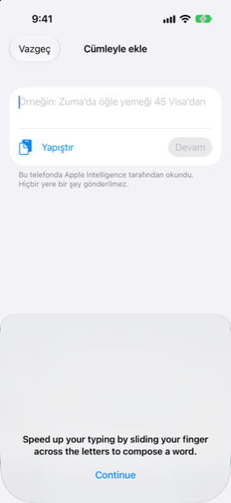

Kılavuz › Parayı kaydetme
Bir cümle yazın
Olanı kendi sözlerinizle söyleyin, Damla formu doldursun.
Olanı yazın — "Zuma'da öğle yemeği 45 Visa'dan" — Damla onu bir tutara, bir hesaba, bir kategoriye ve bir tarihe okur. Ne bulduğunu kontrol eder ve tek dokunuşla onaylarsınız. Bunu yapana kadar hiçbir şey kaydedilmez.
Kendi sözlerinizden kendini dolduran bir formdur. Damla bir şeyi yanlış okursa ya da bir bölümü atlıyorsa, kalanını normal formda, onun anladığından yola çıkarak bitirirsiniz.

Ne zaman kullanılır
- Bir şey için yeni ödediyseniz ya da para aldıysanız ve bir form doldurmadan kaydetmek istiyorsanız.
- Damla'nın otomatik yakalamadığı, parayla ilgili bir banka mesajı ya da e-posta aldıysanız: yapıştırın.
- Bunu söyleyerek bir kart alışverişini taksite çevirmek istiyorsanız; örneğin "okul ödemesi Günlük kartında, artık 6 ay".
- Bir fatura not etmek istiyorsanız: bir faturanın hazır ya da vadesi geldiğine dair, tutarını ya da vade tarihini taşıyan bir mesaj, gelecek bir fatura olarak akılda tutulur.
Adım adım
- Bugün ya da Hareket'teki artı düğmesine dokunun.
- Bir cümle yazın'a dokunun. Cümleyle ekleme ekranı, klavye hazır biçimde açılır.
- Olanı kendi sözlerinizle yazın; tutarını, bir hesap ya da kart adını ve bugün olmadıysa bir tarihini ekleyin. Alanda gösterilen örnek "Örneğin: Zuma’da öğle yemeği 45 Visa’dan"dır. Bir taahhüt de yazabilirsiniz; örneğin bir alışverişi taksite bırakmak gibi.
- Devam'a dokunun. Damla sözleri okurken düğme Reading… gösterir, ardından Kontrol et ve kaydet adlı bölüm ne bulduğunu gösterir.
- Her şey doğruysa Kaydet'e dokunun. Bir bölüm eksik ya da net değilse Damla neye ihtiyacı olduğunu söyler ve Tamamla sunar; bu, anlaşılmış olan zaten doldurulmuş olarak formu açar. Orada bitirin ve kaydedin.
İki kısayol:
- Yapıştır, panoyu alana koyar ve tek dokunuş olmadan hemen okur. Bu, kopyaladığınız banka metinleri ya da e-postalar içindir.
- Kısayolunuzdan, paylaşım sayfasından ya da gelen kutusundan gelen bir mesaj bu ekranı zaten okunmuş açar: gördüğünüz ilk şey Kontrol et ve kaydet bölümüdür.
Kontrol et ve kaydet'te görebilecekleriniz
- Sıradan bir ödeme ya da gelir: tutar, para hangi hesaplar arasında hareket ediyor, alıcı ve tarih. Kaydet'e dokunun.
- Zaten kayıtlı gibi görünen bir şey: bölüm "Bu, daha önce kaydedilmiş bir şeye benziyor." diye uyarır ve Yine de kaydet sunar. Önce kontrol edin — iki kez ödemek mümkündür.
- Taksite çevrilmiş bir alışveriş: okuma, taksiti, ay sayısını, ilk tarihi ve varsa ücreti gösterir; "Bu bir taahhüt oluşturur, lütfen kontrol edin." notuyla birlikte. Düğme Planı oluştur'dur. Buna dokunana kadar bir öneri olarak kalır.
- Eksik bir şey: "Biraz daha bilgiye ihtiyacım var:" soruları listeler; "Ne kadar?" ya da "Hangi hesaptan geliyor?" gibi, ve Tamamla formu açar.
- Bir fatura bildirimi: "Bu bir fatura bildirimi." Damla onu beklenen bir fatura olarak hatırlar. Onu sonradan ödeyen kart çekimi, tek gerçek işlemdir, bu yüzden hiçbir şey iki kez sayılmaz.
- Bir kart ekstresi bildirimi: "Bu bir kart ekstresi bildirimi." Üzerinden geçmek için Ekstreyi gözden geçir'e dokunun.
Cümle, banka bildirimi görünümünde alışıldık biçimde basılmış tutarlarla bir banka bildirimi ise, onu kod okur. Yalnızca bildirime benzemeyen cümleler cümle okuyucudan geçer.
Bilmek iyi olur
Kaydettikten sonra Damla, alıcıyı nasıl kategorize ettiğinizi hatırlar; böylece aynı dükkândan gelen sonraki mesaj o kategoriye kendiliğinden kaydedilir.
İlgili
Anlaşılmayan ya da eksik bir şey mi var? support@raveniq.ai adresine yazın ve hangi sayfa olduğunu belirtin.